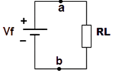
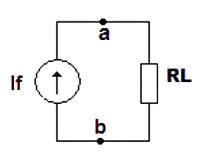

Os componentes de circuito discutidos anteriormente são elementos de circuito ideais. Ambas são simplificações que usamos para auxiliar na análise de circuitos. Nenhuma dessas fontes realmente existe no mundo físico.
Uma fonte ideal de tensão mantém uma tensão fixa, independente da corrente extraída dela.
Uma fonte ideal de corrente mantém uma corrente fixa, independente da tensão em seus terminais.
Um dispositivo com tensão infinita de circuito aberto ou corrente infinita de curto-circuito seria extremamente perigoso. Veja os limites teóricos:
| RL | It |
|---|---|
| 1 kΩ | 12 mA |
| 10 Ω | 1,2 A |
| 0,1 Ω | 120 A |
| 0,001 Ω | 12 kA |
| CURTO-CIRCUITO (RL → 0) | I → ∞ |
| RL | Vab |
|---|---|
| 1 kΩ | 5 V |
| 100 kΩ | 500 V |
| 1 MΩ | 5000 V |
| 10 MΩ | 50 kV |
| CIRCUITO ABERTO (RL → ∞) | V → ∞ |
Os elementos de circuito do mundo real se aproximam dos modelos matemáticos ideais, mas inevitavelmente serão imperfeitos. Em vez disso, existem apenas fontes, que fornecem tensão ou fornecem corrente aos circuitos. A diferença entre elas é: qual dos parâmetros está sob o controle da fonte e qual sob o controle da carga.
Uma aproximação melhorada de uma fonte real de tensão (ou corrente) deve levar em conta as perdas internas de energia. Quando exigimos uma corrente elevada da fonte de tensão, a tensão de saída disponível será menor que a tensão gerada internamente (Vmed < Vg). O Vmed será igual a Vg menos a perda interna.
O modelo para uma fonte real de tensão é composto por uma fonte ideal de tensão (Vg) em série com uma resistência interna (ri).
Esta resistência (ri) é somente uma representação, um modelo simplificado das perdas internas na fonte. Através dela, podemos dar uma explicação da queda de tensão na saída da fonte de tensão quando se exigem correntes elevadas e assim influenciar no comportamento do circuito.
Observação: Esta resistência interna não é uma resistência física e não pode ser medida diretamente com um multímetro na escala de Ohms, mas pode ser determinada indiretamente pela análise do circuito.
Quando a fonte real de tensão é conectada a uma carga (RL), o circuito atua como um circuito em série, onde a tensão total (Vg) se divide entre a resistência interna (ri) e a resistência de carga (RL).
A corrente total é It.
Vri é a queda de tensão sobre a resistência interna.
Aplicando a Lei de Kirchhoff para tensões (Lei da Malha), temos:
+Vg − Vri − Vs = 0
A equação da tensão de saída (Vs) é obtida isolando Vs, e substituindo Vri pela Lei de Ohm (Vri = It ⋅ ri):
Vs = Vg − Vri
Vs = Vg − It ⋅ ri
Podemos analisar o circuito como um circuito série divisor de tensão. A tensão gerada Vg será dividida entre ri e RL.
Considerando ri constante, se diminuirmos RL aumenta a corrente do circuito. Se a corrente aumentar, vai diminuir a tensão na saída da fonte (Vs).
Se RL for muito maior que ri (RL >>> ri), quase toda a tensão gerada na fonte estará disponível na saída (Vs) para a carga.
Se RL diminui, diminui a tensão (Vs) sobre a carga e a capacidade de fornecer energia da fonte. Isso aumenta a tensão sobre ri (Vri), que representa um aumento das perdas internas na fonte.
Calcular a tensão e a corrente no circuito abaixo de acordo com a variação de RL:
| RL (Ω) | It | Vri | Vs |
|---|---|---|---|
| 10 k | 1,19988 mA | 119,988 µV | 11,999 V |
| 1 k | 11,988 mA | 1,1988 mV | 11,998 V |
| 100 | 119,88 mA | 11,988 mV | 11,988 V |
| 10 | 1,188 A | 118,8 mV | 11,88 V |
| 1 | 10,91 A | 1,09 V | 10,91 V |
| 0,1 | 60 A | 6 V | 6 V |
| 0,01 | 109,1 A | 10,9 V | 1,1 V |